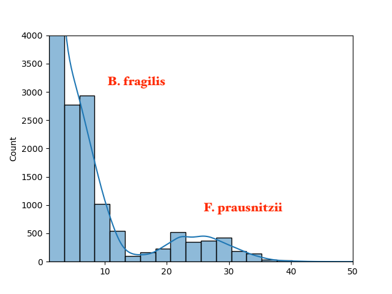
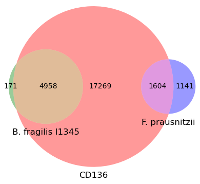

Analyzing a single metagenome for taxonomy¶
The tutorial uses sourmash to do various k-mer based analyses of Illumina shotgun metagenome content.
In this tutorial, you will learn:
- how to look at what genomes share content with a metagenome;
- how to examine the abundance of metagenome content without a reference;
- how to summarize the taxonomic content of a metagenome;
We will be using the taxonomic classification system as benchmarked in Evaluation of taxonomic classification and profiling methods for long-read shotgun metagenomic sequencing datasets, which is both very sensitive and quite specific.
Creating a working directory¶
Run:
Installation¶
First let's install the necessary software. We'll be using the sourmash software along with a few sourmash plugins.
mamba create -n tax -y sourmash sourmash_plugin_branchwater
conda activate tax
pip install sourmash_plugin_abundhist sourmash_plugin_venn
Basic membership analysis of the metagenome¶
Now let's convert the CD136 metagenome into sourmash sketch format (docs):
sourmash sketch dna -p abund \
../data/IBD_tutorial_subset/metag/1-trimmed/CD136/*.fq.gz \
--name CD136 -o CD136.sig.zip
And search it against the latest Genome Taxonomy Database (GTDB) containing all known genomes. We'll do the primary search with the 'fastgather' extension to sourmash.
Run:
sourmash scripts fastgather CD136.sig.zip \
../databases/gtdb-rs214-k31.zip -o CD136.x.gtdb-rs214.fastgather.csv -c 16
Display the results of the first search in a nicer format using 'sourmash gather' (docs.
Run:
sourmash gather CD136.sig.zip \
../databases/gtdb-rs214-k31.zip -o CD136.x.gtdb-rs214.gather.csv \
--picklist CD136.x.gtdb-rs214.fastgather.csv:match_name:ident
You should see the output below. What does this mean?
overlap p_query p_match avg_abund
--------- ------- ------- ---------
5.0 Mbp 27.5% 96.7% 7.3 GCF_000598785.2 Bacteroides fragilis...
3.6 Mbp 10.3% 64.2% 3.8 GCF_009678525.1 Parabacteroides dist...
3.2 Mbp 4.6% 59.0% 1.9 GCF_015550345.1 Bacteroides uniformi...
1.6 Mbp 30.7% 58.4% 25.3 GCA_023708525.1 Faecalibacterium pra...
3.6 Mbp 1.2% 8.0% 3.8 GCF_009024595.1 Parabacteroides dist...
1.6 Mbp 5.6% 10.2% 25.1 GCF_017377615.1 Faecalibacterium sp....
2.6 Mbp 0.5% 3.3% 3.7 GCF_015548395.1 Parabacteroides dist...
1.6 Mbp 2.3% 5.1% 24.6 GCA_905199165.1 Faecalibacterium pra...
3.5 Mbp 0.2% 1.9% 2.8 GCA_009678725.1 Parabacteroides dist...
2.1 Mbp 0.1% 1.5% 1.9 GCF_009020375.1 Bacteroides uniformi...
3.3 Mbp 0.2% 1.5% 3.6 GCF_015552355.1 Parabacteroides dist...
1.6 Mbp 1.4% 2.4% 25.2 GCF_000166035.1 Faecalibacterium cf....
4.0 Mbp 0.3% 1.1% 7.3 GCF_009024655.1 Bacteroides fragilis...
1.6 Mbp 1.0% 1.9% 25.3 GCA_019425405.1 Faecalibacterium sp....
found less than 50.0 kbp in common. => exiting
found 14 matches total;
the recovered matches hit 86.0% of the abundance-weighted query.
the recovered matches hit 61.7% of the query k-mers (unweighted).
Points to discuss:
- 13 matches were found! This means that significant portions of 13 different GenBank genomes matched to some part of the metagenome.
- based on the abundance-weighted matches, 86.0% of the metagenome reads will map to at least one of these genomes. This means that at least 86% of the metagenome content is known!
- based on the unweighted matches, 61.7% of the metagenome's genomic content is present in the reference database. Some of this is probably erroneous data or host contamination.
K-mer abundance histogram¶
Let's examine this data set further. First, let's take a look at the abundance spectrum of the metagenome content. This is an annotation and reference-free exercise: we're just counting content.
Run the abundhist plugin:
sourmash scripts abundhist CD136.sig.zip \
--max 50 --bins 20 --figure CD136-abundance.png \
--ymax 4000
CD136-abundance.png, which will look approximately
like this:
)
Points to discuss:
- this is a histogram of sequence content, separated by abundance.
- the X axis is the abundance, the Y axis is how much of the content is at that abundance.
- you would expect a peak for each species present.
- for this simple mock metagenome, there are two peaks: one under 10, one around 30.
- we do not know what these species are based on this diagram, but we can annotate them based on the avg_abund column in the sourmash gather output above.
K-mer overlap between metagenomes and two genomes¶
Now, since (based on the gather output and the abundance histogram) we think there are two major species, let's take a look at the overlap of genomes of these species with the entire metagenome.
We do this with the Venn plugin. But first we need to extract and rename the matches we're interested in comparing:
Run:
sourmash sig grep "GCF_000598785.2" ../databases/gtdb-rs214-k31.zip \
-o GCF_000598785.2.sig.zip
sourmash sig grep "GCA_023708525.1" ../databases/gtdb-rs214-k31.zip \
-o GCA_023708525.1.sig.zip
sourmash sig rename GCF_000598785.2.sig.zip "B. fragilis I1345" \
-o B.fragilis.sig.zip
sourmash sig rename GCA_023708525.1.sig.zip "F. prausnitzii" \
-o F.prausnitzii.sig.zip
And now generate a 3-way Venn diagram:
sourmash scripts venn -k 31 CD136.sig.zip B.fragilis.sig.zip \
F.prausnitzii.sig.zip -o CD136-venn.png
In the resulting figure CD136-venn.png (see below), multiply numbers
by 1000 to get number of bases. CD136 (the red circle) is the entire
metagenome.

Points to discuss:
- the metagenome CD136 contains a mixture of content from whatever genomes are present.
- based on the gather output, we can see two major species (also see taxonomy results below): B. fragilis and F. prausnitzii.
- This Venn diagram illustrates their genomic overlap with the k-mer content of the metagenome. This is not weighted by abundance: the size of the circles is relative to the genome size.
- We can see that the B. fragilis I135 genome is almost entirely contained in the metagenome. Based on the p_match column from the gather output above, it is 96.7% present in the metagenome!
- In contrast, the F. prausnitzii genome is just a bit more than half contained in the metagenome (p_match is
Questions to ask:
- why are these genomes not entirely present (100% overlap)?
- low coverage
- strain variation
- what ELSE might be in the metagenome??
- contamination
- unknown genomes (see morning session)
Summarizing taxonomy¶
Prepare the taxonomic lineages file so that the commands run fast.
Run:
sourmash tax prepare -t ../databases/gtdb-rs214.lineages.csv.gz \
-F sql -o gtdb-rs214.lineages.sqldb
Now let's generate a human-readable taxonomic analysis at the species level. This uses the GTDB taxonomic lineages to summarize all of the gather matches at the species level.
Run:
You will see:
sample name proportion cANI lineage
----------- ---------- ---- -------
CD136 41.0% 92.5% d__Bacteria;p__Bacillota_A;c__Clostridia;o__Oscillospirales;f__Ruminococcaceae;g__Faecalibacterium;s__Faecalibacterium prausnitzii_D
CD136 27.8% 95.1% d__Bacteria;p__Bacteroidota;c__Bacteroidia;o__Bacteroidales;f__Bacteroidaceae;g__Bacteroides;s__Bacteroides fragilis
CD136 14.1% - unclassified
CD136 12.4% 94.7% d__Bacteria;p__Bacteroidota;c__Bacteroidia;o__Bacteroidales;f__Tannerellaceae;g__Parabacteroides;s__Parabacteroides distasonis
CD136 4.6% 93.7% d__Bacteria;p__Bacteroidota;c__Bacteroidia;o__Bacteroidales;f__Bacteroidaceae;g__Bacteroides;s__Bacteroides uniformis
we can also roll this up from species to other taxonomic ranks, like
class, by adding -r <rank>.
Run:
sourmash tax metagenome -g CD136.x.gtdb-rs214.gather.csv \
-t gtdb-rs214.lineages.sqldb -F human -r class
and you will get the above results "pulled back" to class:
sample name proportion cANI lineage
----------- ---------- ---- -------
CD136 44.9% 98.0% d__Bacteria;p__Bacteroidota;c__Bacteroidia
CD136 41.0% 92.5% d__Bacteria;p__Bacillota_A;c__Clostridia
CD136 14.1% - unclassified
Points to discuss:
- what is the "unclassified" content?
- what is cANI? (what is ANI!)
Things for students to try out:
- Try executing the commands for different ranks - genus, family, order, class, phylum, superkingdom. Do the results make sense?
Next tutorial: Comparing metagenomes